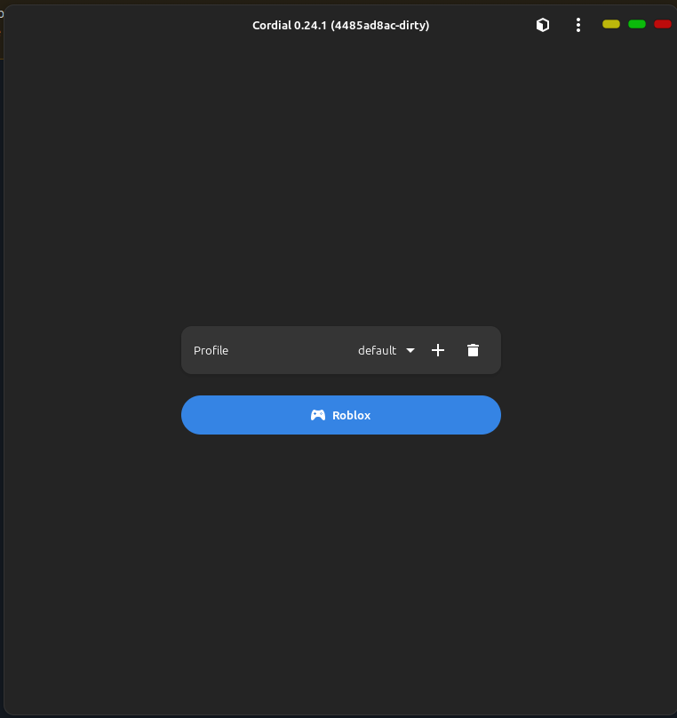
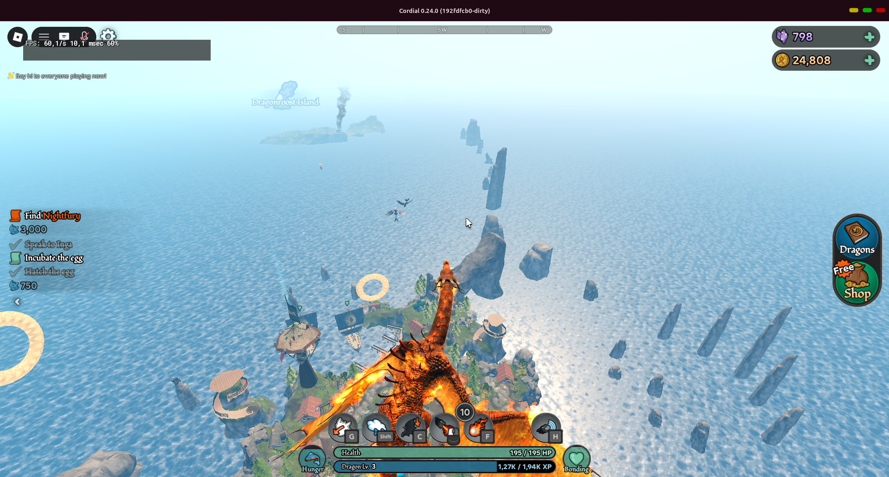

Roblox on Linux, natively. Vulkan gutted. GL ES over Zink.
# Add the remote
flatpak remote-add --if-not-exists --no-gpg-verify \
cordial-z https://theonewhonevergaveup.github.io/cordial/repo
# Install
flatpak install cordial-z io.github.luohoa97.CordialZThe Vulkan backend is demolished — 2,910 lines reduced to 123. Sonames unregistered in the symbol table. GL ES over Zink is the only path, and it is CORDIAL_NO_VULKAN-free.
Upstream 24.1 detects a stuck start from Roblox's own log (RenderView destroyed[1] missing) and restarts automatically. Silent — no notification, no dialog.
CORDIAL_LUA_DELAY_MS delays the Lua app start until after the engine's first render step, tilting the race that causes the startup freeze. Tune it, don't fight it.
Felix's own Z+C logo, drawn in BoxySVG. Metallic silver Z (the Zink palette) with an orange-to-gold C (Cordial's palette). Vector, scales clean.
display-fps — the only frame-rate reading that works on GL ES. graphics-levers — graphics-quality profiles. Both pass cargo test.
MIT fork of upstream Cordial (GPL-3.0). Every line auditable. No Roblox code bundled — you supply the Android client.

